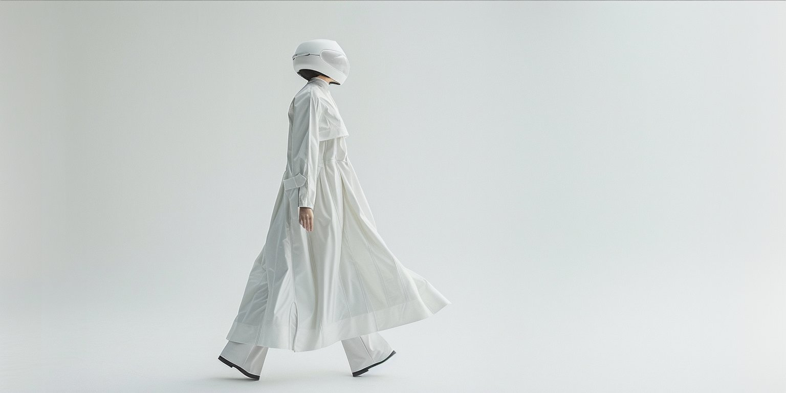

The Ghost in the Machine: Botox, AI, and the Augmented Authenticity Paradox
Why Using AI Feels Like Cheating—even When It Isn't
Read More
Where consumer psychology meets generative AI — building future-proof brands, and quieter minds. Sound frequencies for calm, essays for clarity.
Psychology First, Pixels Second. In an economy of attention, visuals are not enough. My approach decodes the neural pathways of your audience. With a background in consumer psychology, I leverage Generative AI to craft experiences that cut through the noise. We strip away the excess to reach the signal—creating digital spaces that feel human, intuitive, and profound. This is not just marketing. This is evolution.

Technology is code; Intuition is the spark. We empower women to lead the revolution, turning "complex" tech into a creative playground.
We leverage algorithms to decode the noise. Using AI not just to create content, but to curate precision and focus for the neurodivergent mind.
Algorithms change daily, but human nature remains. We fuse consumer psychology with GenAI to build resilient narratives for 2026.
Weekly essays on psychology, AI, and quieter digital spaces.
Why Using AI Feels Like Cheating—even When It Isn't
Read More
Because belief, not technology, has become the real bottleneck in decision-making, growth, and identity.
Read MoreExplore more thoughts on AI, psychology, and the future of human potential.
View All Articles